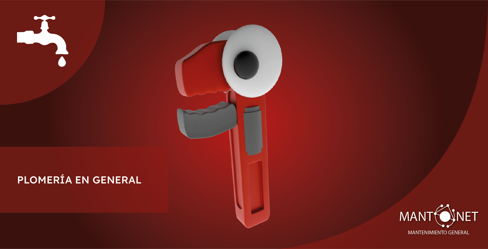

Plomería Profesional en CDMX: Soluciones Rápidas y Confiables

Nuestra Experiencia
En Mantonet, somos tus expertos en plomería en la Ciudad de México. Resolvemos todo tipo de problemas hidráulicos, desde fugas de agua y taponamientos en tuberías hasta instalaciones hidráulicas nuevas y mantenimiento preventivo. Ofrecemos servicios de fontanería a domicilio para casas, departamentos, oficinas y comercios en toda la CDMX, con especial atención a zonas céntricas y de alta demanda como el Centro Histórico, Roma, Condesa, Polanco y más.
Utilizamos materiales de alta calidad y herramientas especializadas de última generación (ej. equipo de termografía para detección de fugas no invasivas) para garantizar la durabilidad de nuestras reparaciones e instalaciones. Al finalizar, te entregamos un informe técnico detallado con el diagnóstico preciso, fotografías del antes y después, y recomendaciones personalizadas para prevenir futuros problemas.
Con más de 200 servicios de plomería ejecutados con satisfacción garantizada en la CDMX, tu tranquilidad es nuestra prioridad. Todos nuestros trabajos cuentan con una garantía sobre el servicio realizado.
Nuestros Servicios de Plomería Incluyen:
- Reparación de Fugas de Agua: Detección precisa y reparación de fugas visibles y ocultas en tuberías, paredes, techos, y pisos.
- Destapacaños y Desazolve: Solución profesional y eficiente a taponamientos en lavabos, WC, regaderas, coladeras y sistemas de desagüe principales.
- Instalaciones Hidráulicas Nuevas: Diseño e implementación de sistemas de plomería completos para construcciones residenciales y comerciales, incluyendo redes de agua potable y drenaje.
- Mantenimiento Preventivo: Revisión periódica, limpieza de tuberías y optimización de sistemas hidráulicos para prolongar su vida útil y evitar problemas mayores.
- Instalación y Reparación de Boilers y Calentadores de Agua: Servicio completo para calentadores de paso, de depósito y solares.
- Servicios de Plomería de Urgencia en CDMX: Atención rápida para emergencias de plomería que requieren solución inmediata.
¿Cómo Solicitas un Servicio de Plomería con Mantonet?
- Visita Sin Costo: Realizamos una visita técnica gratuita en tu domicilio o negocio en CDMX para identificar el problema o evaluar tu instalación.
- Propuesta Detallada: Te enviamos una cotización transparente y sin compromiso con materiales sugeridos, tiempos de ejecución y costos claros y competitivos.
- Agenda tu Servicio: Agendamos la intervención profesional en el horario que mejor te convenga, con la flexibilidad que necesitas.
- Ejecución Profesional: Nuestro equipo realiza el trabajo con máxima limpieza, revisa a fondo la funcionalidad y te entrega tu informe final de servicio para tu tranquilidad.
Preguntas Frecuentes sobre Plomería y Mantenimiento
¿Por qué es importante el mantenimiento preventivo en plomería?
El mantenimiento preventivo de plomería es clave para la salud de tu propiedad. Sus principales beneficios son:
- Evitar reparaciones costosas: Detectar una pequeña fuga o un inicio de obstrucción es mucho más barato que reparar una tubería rota o una inundación.
- Proteger la estructura del inmueble: Las fugas de agua no detectadas pueden causar humedad, moho y daños estructurales graves a largo plazo.
- Asegurar la calidad del agua: Un sistema de tuberías limpio y sin sarro garantiza que el agua que usas sea segura y libre de contaminantes.
- Ahorrar agua y dinero: Un simple goteo en un inodoro o una llave puede desperdiciar miles de litros al año, impactando directamente tu recibo de agua.
¿Cuáles son las señales de una fuga de agua oculta?
El Enemigo Silencioso: Cómo Descubrir Fugas No Visibles
Las fugas ocultas pueden pasar desapercibidas por meses. Presta atención a estas señales de alerta:
- Aumento inesperado en el recibo de agua sin un cambio en tus hábitos de consumo.
- Manchas de humedad, moho o pintura descascarada en paredes, techos o pisos.
- Sonido constante de agua corriendo incluso cuando todas las llaves están cerradas.
- Baja presión de agua repentina en toda la propiedad.
- Zonas del jardín o piso exterior inusualmente húmedas o con crecimiento de vegetación más verde.
- El medidor de agua sigue girando aunque no estés usando agua en ese momento.
¿Es recomendable usar destapacaños químicos para las tuberías?
Antes de Vaciar la Botella: Los Riesgos de los Químicos
Aunque parecen una solución rápida, los destapacaños químicos deben usarse con extrema precaución o evitarse por completo. Aquí las razones:
- Son altamente corrosivos: Pueden dañar y debilitar las tuberías, especialmente las de metal o PVC antiguo, causando fugas graves a futuro.
- Peligrosos para la salud: Sus vapores son tóxicos y el contacto con la piel puede causar quemaduras químicas severas.
- No siempre solucionan el problema: Si la obstrucción es sólida (un objeto atorado), el químico no funcionará y se quedará estancado, creando una situación aún más peligrosa.
- Daño ambiental: Estos químicos terminan en el sistema de drenaje, afectando el medio ambiente.
La mejor opción: Intentar con métodos mecánicos (bomba destapacaños, alambre) o llamar a un profesional que use equipo especializado.
¿Qué diferencia hay entre plomería residencial y comercial (PYMES)?
No es lo Mismo un Baño que Cien: Plomería para Negocios
Aunque los principios son los mismos, la plomería comercial tiene exigencias mucho mayores:
- Mayor Demanda y Complejidad: Las instalaciones comerciales (restaurantes, oficinas, gimnasios) tienen más pisos, más baños y un uso intensivo que requiere tuberías de mayor diámetro y durabilidad.
- Equipos Especializados: Los negocios a menudo necesitan trampas de grasa (restaurantes), calentadores de agua industriales, sistemas de bombeo y fluxómetros de alta presión.
- Normatividad y Códigos: La plomería comercial debe cumplir con normas de sanidad y seguridad más estrictas que la residencial.
- Impacto de una Falla: Una falla de plomería en un negocio no solo es una inconveniencia, significa pérdida de operaciones y clientes. Por eso, el mantenimiento preventivo es aún más crítico.
¿Qué mantenimiento necesita mi calentador de agua (boiler)?
Alarga la Vida de tu Boiler y Ahorra Gas
Un mantenimiento anual a tu calentador es esencial para su eficiencia y seguridad. Debe incluir:
- Drenado del tanque (purgado): Para eliminar los sedimentos y el sarro que se acumulan en el fondo, los cuales reducen la eficiencia y pueden dañar el equipo.
- Revisión de la válvula de alivio: Comprobar que esta válvula de seguridad funcione correctamente para liberar presión excesiva.
- Inspección del termostato: Asegurarse de que esté calibrado y funcionando a la temperatura adecuada.
- Limpieza del quemador (en calentadores de gas): Un quemador sucio produce una llama ineficiente, consumiendo más gas y generando hollín.
- Revisión de fugas de gas y agua en todas las conexiones del equipo.
¿Cuándo debo llamar a un plomero profesional sin dudarlo?
DIY vs. Profesional: No Te Arriesgues
Algunas tareas menores puedes manejarlas, pero en estas situaciones, siempre llama a un experto:
- Fugas en tuberías dentro de muros o bajo el piso.
- Ausencia total de agua en la propiedad sin que sea un corte del servicio general.
- Baja presión de agua generalizada, ya que puede indicar un problema serio en la línea principal o una fuga grande.
- Drenajes completamente bloqueados que no ceden con métodos simples.
- Olor a gas cerca del calentador de agua o cualquier línea de gas.
- Para la instalación de cualquier aparato nuevo como un calentador, un lavavajillas o la remodelación de un baño.
Recuerda: Un trabajo mal hecho puede causar una inundación. La inversión en un profesional es garantía de seguridad y tranquilidad.